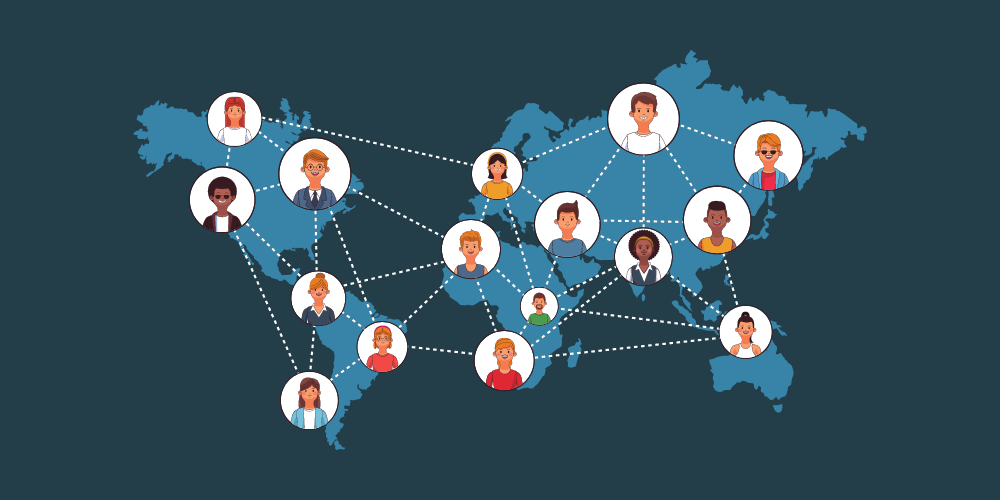

1. Connecting People across the world
You can establish connections with individuals who share your interests and beliefs all over the world. This can foster relationships and create a wealth of possibilities.
2. Education and Knowledge transfer
You can gain information free of cost and make a decent living by sharing your knowledge.
3. Business and Marketing
You can grow your business and dramatically increase its value by marketing your goods and services.
4. Job search and Recruitment
You can quickly find the jobs you need and hire candidates easily.
5. Keep you updated
You can get immediate access to the most recent information about events taking place around the world.